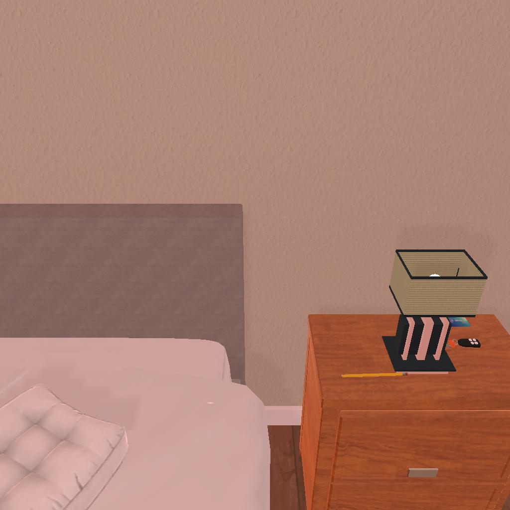

---------------------------------------------------------task: 2---------------------------------------------------------
--------------------------------------------------------------------------------------------------------------------------------------------------------------------
--------------------------------------------------------------------------------------------------------------------------------------------------------------------
Step:--------------------------------------------------------------------------3-------------------------------------------------------------------------------
----------------------------------------
VLM Prompt:
Image1:
**Instruction**
1. Analyze the provided image to identify all visible household objects, focusing on those relevant to the task description "look at pen under the desklamp."
2. Use the analysis of the image and the task hint "The agent must find an object of the desired type, locate and turn on a light source with the desired object in-hand." to answer the question: what is the most reasonable action in the choices for the task description "look at pen under the desklamp"?
4. Decide and write the answer using the template: The answer is: (i): , where i is the real number. If there is no desired object in the image, search every place based on **Initial Observation** to find the object. And if no one is exactly correct, choose a similar answer.
**Initial Observation**
You are in the middle of a room. Looking quickly around you, you can see bed (1-2), dresser (1), drawer (1-11), sidetable (1-2), desk (1), garbagecan (1), safe (1)
**Answer Choices**
(1): go to bed 1
(2): go to dresser 1
(3): go to bed 2
(4): go to drawer 1
(5): go to sidetable 1
(6): go to drawer 2
(7): go to drawer 3
(8): go to drawer 4
(9): go to garbagecan 1
(10): go to drawer 5
(11): go to drawer 6
(12): go to drawer 7
(13): go to drawer 8
(14): go to drawer 9
(15): go to drawer 10
(16): go to drawer 11
(17): go to safe 1
(18): take pillow 1 from sidetable 2
(19): take keychain 1 from sidetable 2
(20): take pencil 2 from sidetable 2
(21): take creditcard 1 from sidetable 2
(22): use desklamp 1
(23): examine sidetable 2
**Answer**
Let's think step by step by following the instructions.
----------------------------------------
----------------------------------------
Original Response:
First, we analyze the image to identify all visible household objects. We can see a bed with a headboard, a sidetable with a desklamp, and what appears to be a pencil (which could be mistaken for a pen), a striped object (possibly clothing or a towel), and some small items including what could be a keychain.
Now, let's use the analysis and the task hint. The task description is to "look at pen under the desklamp." The hint suggests that the agent must find an object of the desired type (pen), locate and turn on a light source (desklamp) with the desired object in-hand.
Looking at the image, it's not clear if the item under the desklamp is indeed a pen, but it's the object that most closely resembles one. Therefore, the most reasonable action would be to first examine the sidetable to confirm if the object is a pen and then use the desklamp to look at it under the light.
The answer is: (23): examine sidetable 2
----------------------------------------
----------------------------------------
>>> Refine Original VLM Response and Get Pure Action: examine sidetable 2
----------------------------------------
-----------------------------------------------------------------
Running time: 9.80069875717163 seconds
Total Money: 0.49467999999999995
-----------------------------------------------------------------
-----------------------------------------------------------------
Text Observation:On the sidetable 2, you see a pillow 1, a desklamp 1, a keychain 1, a pencil 2, and a creditcard 1.
-----------------------------------------------------------------
UNSUCCEED